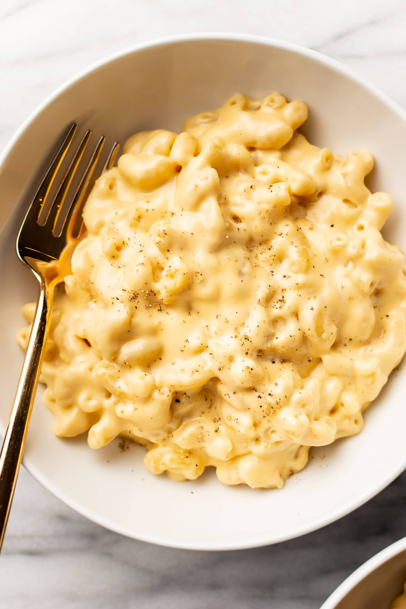

Simple Mac and Cheese

Homemade Mac and Cheese outome
This homemade mac and cheese recipe will knock your socks off. It is simple but delectable. If you're in a rush or even having a lot of guests over for a dinner this will be the recipe for you.
Ingredients
- 1 (8 oz) Box of macaroni
- 1/4 cup of butter
- 1/4 cup of all-purpose flour
- 1 tsp salt
- black pepper to taste
- 2 cups of milk
- 2 cups shredded Cheddar cheese
Steps
- Run pot of boiling water, then pour macoroni noodles in water, cook until al dente (cooking time should be on the pack)
- At the same time melt butter in pan over medium heat
- Add flour, salt, and pepper to melted butter, stir until smooth (about 5 minutes)
- Continuosly mix as you pour milk into butter mixture
- Add chese to mixture and stir unitl melted
- Drain noodles and then pour into cheese sauce
- Mix cheese and noodles well
- Serve and enjoy!
Go home